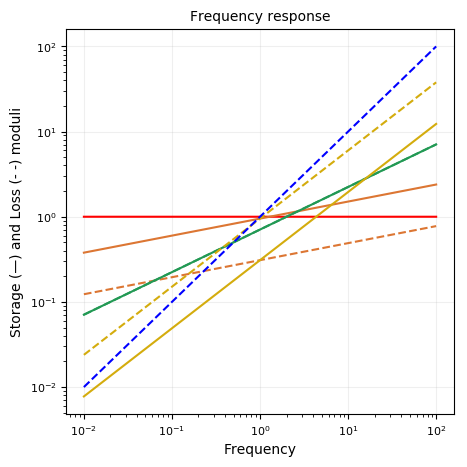

Springpot
using RHEOS
include("plotmodel.jl");By typing the name of the model, it is possible to visualise its graphical representation and its parameters.
SpringpotModel name: springpot
Free parameters: cᵦ and β
____ ╱╲ ____
╲╱ cᵦ, βConstitutive equation
\[\sigma(t) = c_{\beta} \frac{d^\beta \epsilon(t)}{dt^\beta}\]
for $0 \leq \beta \leq 1$
Relaxation modulus
\[G(t) = \frac{c_{\beta} }{\Gamma(1-\beta)} t^{-\beta}\]
Creep modulus
\[J(t) = \frac{1}{c_\beta \Gamma(1+\beta)}t^\beta\]
Storage modulus
\[G^{\prime}(\omega) = c_\beta \omega^\beta \cos(\frac{\pi}{2}\beta)\]
Loss modulus
\[G^{\prime\prime}(\omega) = c_\beta \omega^\beta \sin(\frac{\pi}{2}\beta)\]
Spring
When $\beta = 0$ the springpot specialises to a spring
SpringModel name: spring
Free parameters: k
___╱╲ ╱╲ ╱╲ ________
╲╱ ╲╱ ╲╱ kDashpot
When $\beta = 1$ the springpot specialises to a dashpot
DashpotModel name: dashpot
Free parameters: η
___
_____| |_____
_|_|
ηQualitative behaviours of the moduli
models = Vector{RheoModel}()
# Spring
models = vcat(models, RheoModel(Spring, (k = 1.0,)))
# plot moduli for varying β
for (i,beta) in enumerate([0.2, 0.5, 0.8])
models = vcat(models, RheoModel(Springpot,(cᵦ = 1.0, β = beta)))
end
# Dashpot
models = vcat(models, RheoModel(Dashpot, (η = 1.0,)))
plotmodel(models, ymaxG = 2.0);
